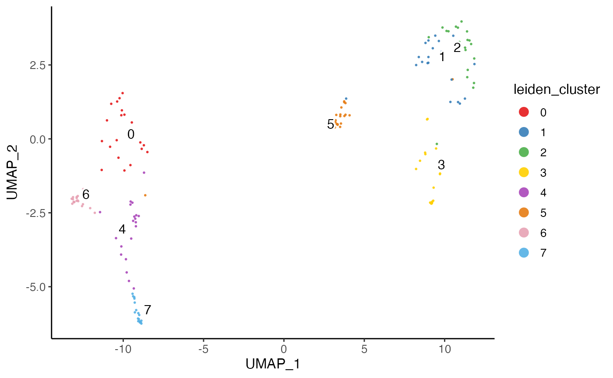

This function mainly aims at downsampling datasets to a size suitable for plotting or expensive in-memmory calculation.
Users can balance the sample size of categories of interests with
balance. Multi-variable specification to balance is supported,
so that at most maxCells cells will be sampled from each combination
of categories from the variables. For example, when two datasets are
presented and three clusters labeled across them, there would then be at most
\(2 \times 3 \times maxCells\) cells being selected. Note that
"dataset" will automatically be added as one variable when balancing
the downsampling. However, if users want to balance the downsampling solely
basing on dataset origin, users have to explicitly set balance =
"dataset".
Usage
downsample(
object,
balance = NULL,
maxCells = 1000,
useDatasets = NULL,
seed = 1,
returnIndex = FALSE,
...
)Arguments
- object
liger object
- balance
Character vector of categorical variable names in
cellMetaslot, to subsamplemaxCellscells from each combination of all specified variables. DefaultNULLsamplesmaxCellscells from the whole object.- maxCells
Max number of cells to sample from the grouping based on
balance.- useDatasets
Index selection of datasets to include Default
NULLfor using all datasets.- seed
Random seed for reproducibility. Default
1.- returnIndex
Logical, whether to only return the numeric index that can subset the original object instead of a subset object. Default
FALSE.- ...
Arguments passed to
subsetLiger, wherecellIdxis occupied by internal implementation.
Value
By default, a subset of liger
object.
Alternatively when returnIndex = TRUE, a numeric vector to be used
with the original object.
Examples
# Subsetting an object
pbmc <- downsample(pbmc)
#> ℹ Subsetting dataset: "ctrl"
#> ℹ Subsetting dataset: "stim"
#> ✔ Subsetting dataset: "stim" ... done
#>
#> ℹ Subsetting dataset: "ctrl"
#> ✔ Subsetting dataset: "ctrl" ... done
#>
# Creating a subsetting index
sampleIdx <- downsample(pbmcPlot, balance = "leiden_cluster",
maxCells = 10, returnIndex = TRUE)
plotClusterDimRed(pbmcPlot, cellIdx = sampleIdx)
#> ℹ Plotting feature "leiden_cluster" on 158 cells
#> ✔ Plotting feature "leiden_cluster" on 158 cells ... done
#>
